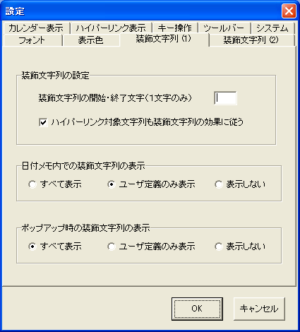
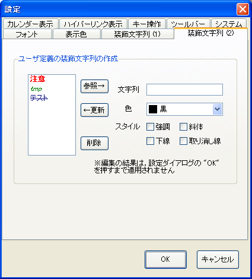

装飾文字列に関するオプション設定は， 設定ダイアログの[装飾文字列 (1)]，[装飾文字列 (2)]に まとめられています．
装飾文字列 (1) タブからは，装飾文字列の表示方法に関する 設定を行うことができます．
| 項目名 | 機能 | |
|---|---|---|
| 装飾文字列の開始・終了文字 | 標準では "|" が指定されています．
装飾文字列をくくる記号（１文字）を指定します．
好みに応じて，*や"などに設定してください．
|
|
| ハイパーリンク対象文字列も装飾文字列の効果に従う | ハイパーリンク対象文字列は，通常， [フォント]設定によって設定されたフォントでのみ 表示され，装飾文字列の効果を受けません． このチェックボックスにチェックを入れると， 装飾文字列の効果を優先して受けるようになります． | |
| 日付メモ内での装飾文字列の表示 |
例を参照してください．
|
|
| ポップアップ時の装飾文字列の表示 | 日付メモの場合と基本的には同様です．
|
装飾文字列 (2) タブからは，装飾文字列の 追加を行うことができます．
これは，色の名前以外に， たとえば "|注意|" と書かれた行だけは赤色で表示する， といった用途のために用意されています． また，色以外に，太字・斜体なども利用できます．
ユーザ定義の装飾文字列を追加するには， 使用したい文字列と，その文字列に割り付ける装飾情報を選択し， [←更新]を押下します．定義済みの項目がリストに表示されます． リストから項目を選択し，[参照→]を押下することで 設定を読み出すことができます．
不要な装飾文字列は，リストから選択して[削除]を選ぶことで削除できます．
すべての変更は，ダイアログの[OK]をクリックした時点で始めて有効になります． 操作を誤った場合などは，[キャンセル]を選んで変更を破棄してください．
作成されたユーザ定義の文字列の使い方は 色の名前と同様です．
この画面のサンプルのような設定状態で， [日付メモ内での装飾文字列の表示]を[表示しない]に設定すると， 次のように記述と表示が対応します．
| 日付メモに記入した文字列 | 実際の表示 |
|---|---|
|tmp|一時的な用件 | 一時的な用件 |
|注意|注意事項 | 注意事項 |
|tmp|テストしたい項目|テスト|テスト済み事項 | テストしたい項目 |
[日付メモ内での装飾文字列の表示]を [表示する][ユーザ定義のみ表示]に設定すると， 次のように記述と表示が対応します．
| 日付メモに記入した文字列 | 実際の表示 |
|---|---|
|tmp|一時的な用件 | |tmp|一時的な用件 |
|注意|注意事項 | |注意|注意事項 |
|tmp|テストしたい項目|テスト|テスト済み事項 | |tmp|テストしたい項目 |
ユーザ定義文字列は，用件などに対するマーカーとして活用できます． 用件の種別に応じて文字列を設定しておくと， 一貫した着色やスタイルの設定だけでなく， 後から文字列を検索したりといった使い方もできます． 好みや使い方に応じて，設定を変えてみてください．